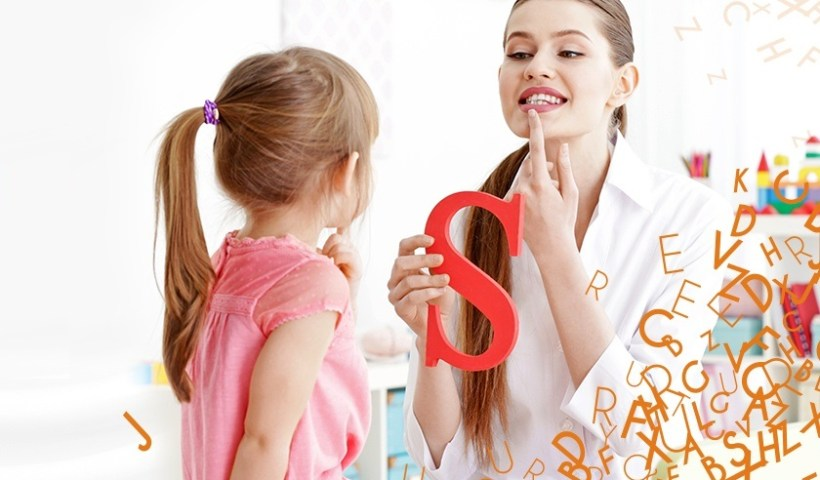

3 Dhjetor
Dita Ndërkombëtare e Personave me Aftësi të Kufizuar
Sipas Organizatës Botërore të Shëndetësisë, më shumë se një bilion njerëz në të gjithë botën jetojnë me aftësi të kufizuar. Këta persona, përgjithësisht, kanë më shumë probleme shëndetësore, mundësi më të pakta ekonomike, edukim dhe arritje akademike më të ulëta. Kjo ndodh më së shumti për shkak të barrierave me të cilat ata përballen në jetën e tyre të përditshme, se sa si rrjedhojë ekskluzive e aftësisë së kufizuar.
Aftësia e kufizuar nuk është thjesht një çështje e shëndetit publik,
por gjithashtu e të drejtave të njeriut dhe zhvillimit të shoqërisë. Përpjekjet e OBSH-së për të mbështetur shtetet në aspekte të ndryshme, reflektohen në Planin e Veprimit për Personat me Aftësi të Kufizuar 2014-2021, në Raportin Botëror për Aftësinë e Kufizuar, si dhe në Konventën e të Drejtave për Personat me Aftësi të Kufizuar.
Dita Ndërkombëtare e Personave me Aftësi të Kufizuar (3 dhjetor), u vendos me Rezolutën 47/3 në Asamblenë e Përgjithshme të Kombeve të Bashkuara.
Qëllimi i kësaj dite është promovimi i të drejtave, mirëqenies, si dhe rritja e ndërgjegjësimit
lidhur me situatën e personave me aftësi të kufizuar në të gjitha sferat e shoqërisë dhe aspektet e zhvillimit – jetës politike, sociale, ekonomike dhe kulturore.
Konventa e të Drejtave të Personave me Aftësi të Kufizuar, e ndërtuar përgjatë disa dekadave të punës së Kombeve të Bashkuara dhe përshtatur në vitin 2008, ka përparuar edhe më shumë me implementimin e Agjendës për Zhvillimin e Qëndrueshëm 2030, dhe dokumenteve të tjera të ngjashme.

Izolimi në banesë gjatë muajve të karantinës dhe gjithë kufizimet e tjera që ajo solli, patën pasoja për mijëra persona me aftësi të kufizuar. Vetëm në qytetin e Elbasanit, ku rezultojnë mbi 26 mijë persona me aftësi të kufizuara, përfshirë edhe invalidët e punës, shumë individë mbetën pa terapitë e domosdoshme apo ndihmën e kujdestarëve. Për fëmijët autikë dhe aftësi të tjera të veçanta, shpëtimi ishin prindërit që u kthyen në terapistë, ndërsa platformat online për të ndihmuar këtë kategori, rezultuan një dështim.
“Shumë pak është bërë për t’u siguruar njerëzve me aftësi të kufizuara udhëzimet dhe mbështetjen e nevojshme për t’i mbrojtur ata gjatë pandemisë së Covid-19,
edhe pse shumë prej tyre janë pjesë e grupit me rrezikshmëri të lartë. Masat për të parandaluar infeksionin, të tilla si distancimi shoqëror dhe izolimi, mund të jenë të pamundura për ata që mbështeten në ndihmën e të tjerëve për të ngrënë, veshur dhe larë.” – tha ekspertja e OKB Catalina Devandas Aguilar, në mars të këtij viti, kur sapo ishte shpallur pandemia nga koronavirusi.
Ndërkohë një studim i realizuar nga dy studiuese të universitetit të Prishtinës mbi ndikimin e pandemisë tek fëmijët me aftësi të kufizuar tregon efektet negative të kësaj periudhe:
“Gjetjet e studimit tregojnë se periudha e pandemisë, e ndërlidhur me izolimin në shtëpi, mungesën e socializimit, ndryshimin e rutinës ditore dhe mungesën e shërbimeve, kanë ndikuar në mënyrë negative në gjendjen emocionale të fëmijëve me aftësi të kufizuara, duke kontribuar në ngarkesë dhe stres të prindërve”.
Një fëmijë me vonesë gjuhësore mund të artikulojë fjalë, por mund të jetë i aftë të ndërtojë fjali vetëm me dy gjymtyrë.
Një fëmijë me vonesë në të folur mund të përdorë fjalë dhe fjali për të shprehur mendimet e tij, por të tjerët e kanë të vështirë ta kuptojnë.
Cilat janë shenjat e një vonese gjuhësore dhe një vonese në të folur?
Një fëmijë që nuk iu përgjigjet tingujve ose një fëmijë që nuk vokalizon; duhet të konsultohet me një specialist. Shpesh, për prindërit është e vështirë të kuptojnë në qoftë se fëmija i tyre kërkon edhe pak më shumë kohë për të arritur hapat e zhvillimit të gjuhës dhe të të folurit apo në qoftë se fëmija ka vërtet diçka problematike që kërkon konsultimin me specialistin.
Disa shenja që mund të kërkojnë këshillimin e specialistit, mund të jenë:
Rreth 12 muaj; fëmija nuk përdor gjeste, si tregimi me gisht apo tundja e dorës “paçim – paçim”
Rreth 18 muaj; preferon komunikimin jo- verbal në vend që të vokalizojë për të komunikuar
Rreth 18 muaj; fëmija e ka të vështirë të imitojë tinguj; e ka të vështirë të kuptojë kërkesa verbale të thjeshta
Rreth 2 vjeç; mund të imitojë të folurin ose veprime të të tjerëve; por nuk prodhon fjalë ose fraza në mënyrë spontane
Rreth 2 vjeç; fëmija artikulon shpesh vetëm disa tinguj apo fjalë; por nuk mund të komunikojë nëpërmjet të folurit (komunikimit verbal)
Rreth 2 vjeç; nuk mund të ndjekë komanda të thjeshta
Prindërit e kanë të vështirë të kuptojnë fëmijën e tyre; prindërit duhet të kuptojnë rreth gjysmën e asaj që fëmija thotë në moshën 2 vjeçare, e më shumë e 3/4 në moshën 3 vjeçare, në moshën 4-5 vjeçare fëmija duhet të kuptohet pothuajse nga të gjithë.
Çfarë i shkakton vonesat gjuhësore dhe ato të të folurit?